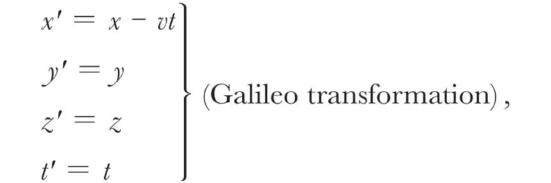
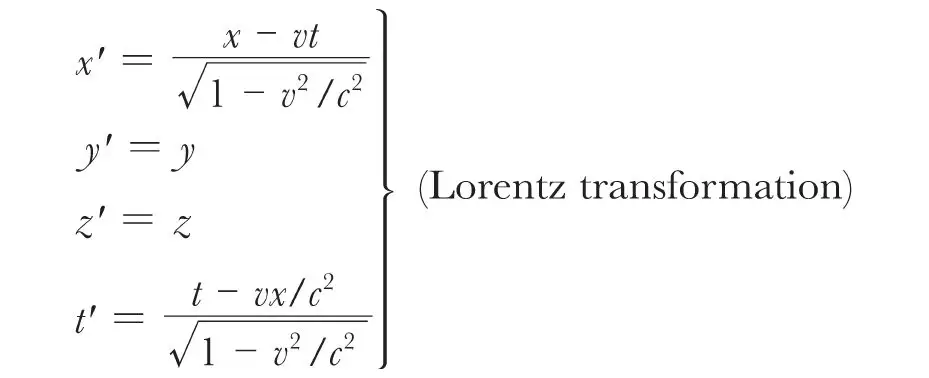
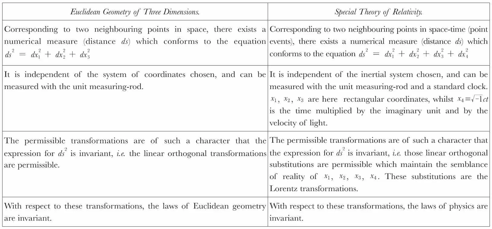
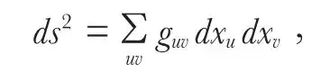

中文
中文A. Einstein
Editor’s Note
By 1921, Einstein’s theory of relativity was widely accepted. Here he describes the theory’s historical development, starting from the aim to rid physics of reliance on action at a distance. Maxwell had achieved this for electricity and magnetism, and his mathematical formulation led others to suppose that all space is filled with an ether that carried the electric and magnetic fields. This led to difficulties, which Einstein overcame by abandoning the belief that events may be simultaneous regardless of an observer’s motion. But this new understanding didn't encompass gravity. The supposition that gravity and inertia are identical prompted the general theory of relativity. Einstein wonders if gravitational and electrical phenomena might be unified in a theory of all nature’s forces—a theory physicists still seek today. 中文
THERE is something attractive in presenting the evolution of a sequence of ideas in as brief a form as possible, and yet with a completeness sufficient to preserve throughout the continuity of development. We shall endeavour to do this for the Theory of Relativity, and to show that the whole ascent is composed of small, almost self-evident steps of thought. 中文
The entire development starts off from, and is dominated by, the idea of Faraday and Maxwell, according to which all physical processes involve a continuity of action (as opposed to action at a distance), or, in the language of mathematics, they are expressed by partial differential equations. Maxwell succeeded in doing this for electro-magnetic processes in bodies at rest by means of the conception of the magnetic effect of the vacuum-displacement-current, together with the postulate of the identity of the nature of electro-dynamic fields produced by induction, and the electro-static field. 中文
The extension of electro-dynamics to the case of moving bodies fell to the lot of Maxwell’s successors. H. Hertz attempted to solve the problem by ascribing to empty space (the ether) quite similar physical properties to those possessed by ponderable matter; in particular, like ponderable matter, the ether ought to have at every point a definite velocity. As in bodies at rest, electro-magnetic or magneto-electric induction ought to be determined by the rate of change of the electric or magnetic flow respectively, provided that these velocities of alteration are referred to surface elements moving with the body. But the theory of Hertz was opposed to the fundamental experiment of Fizeau on the propagation of light in flowing liquids. The most obvious extension of Maxwell’s theory to the case of moving bodies was incompatible with the results of experiment. 中文
At this point, H. A. Lorentz came to the rescue. In view of his unqualified adherence to the atomic theory of matter, Lorentz felt unable to regard the latter as the seat of continuous electro-magnetic fields. He thus conceived of these fields as being conditions of the ether, which was regarded as continuous. Lorentz considered the ether to be intrinsically independent of matter, both from a mechanical and a physical point of view. The ether did not take part in the motions of matter, and a reciprocity between ether and matter could be assumed only in so far as the latter was considered to be the carrier of attached electrical charges. The great value of the theory of Lorentz lay in the fact that the entire electro-dynamics of bodies at rest and of bodies in motion was led back to Maxwell’s equations of empty space. Not only did this theory surpass that of Hertz from the point of view of method, but with its aid H. A. Lorentz was also pre-eminently successful in explaining the experimental facts. 中文
The theory appeared to be unsatisfactory only in one point of fundamental importance. It appeared to give preference to one system of coordinates of a particular state of motion (at rest relative to the ether) as against all other systems of coordinates in motion with respect to this one. In this point the theory seemed to stand in direct opposition to classical mechanics, in which all inertial systems which are in uniform motion with respect to each other are equally justifiable as systems of coordinates (Special Principle of Relativity). In this connection, all experience also in the realm of electro-dynamics (in particular Michelson’s experiment) supported the idea of the equivalence of all inertial systems, i.e. was in favour of the special principle of relativity. 中文
The Special Theory of Relativity owes its origin to this difficulty, which, because of its fundamental nature, was felt to be intolerable. This theory originated as the answer to the question: Is the special principle of relativity really contradictory to the field equations of Maxwell for empty space? The answer to this question appeared to be in the affirmative. For if those equations are valid with reference to a system of coordinates K, and we introduce a new system of coordinates K′ in conformity with the—to all appearances readily establishable—equations of transformation

then Maxwell’s field equations are no longer valid in the new coordinates (x', y', z', t'). But appearances are deceptive. A more searching analysis of the physical significance of space and time rendered it evident that the Galileo transformation is founded on arbitrary assumptions, and in particular on the assumption that the statement of simultaneity has a meaning which is independent of the state of motion of the system of coordinates used. It was shown that the field equations for vacuo satisfy the special principle of relativity, provided we make use of the equations of transformation stated below:

In these equations x, y, z represent the coordinates measured with measuring-rods which are at rest with reference to the system of coordinates, and t represents the time measured with suitably adjusted clocks of identical construction, which are in a state of rest. 中文
Now in order that the special principle of relativity may hold, it is necessary that all the equations of physics do not alter their form in the transition from one inertial system to another, when we make use of the Lorentz transformation for the calculation of this change. In the language of mathematics, all systems of equations that express physical laws must be co-variant with respect to the Lorentz transformation. Thus, from the point of view of method, the special principle of relativity is comparable to Carnot’s principle of the impossibility of perpetual motion of the second kind, for, like the latter, it supplies us with a general condition which all natural laws must satisfy. 中文
Later, H. Minkowski found a particularly elegant and suggestive expression for this condition of co-variance, one which reveals a formal relationship between Euclidean geometry of three dimensions and the space-time continuum of physics. 中文

From this it follows that, in respect of its rôle in the equations of physics, though not with regard to its physical significance, time is equivalent to the space coordinates (apart from the relations of reality). From this point of view, physics is, as it were, a Euclidean geometry of four dimensions, or, more correctly, a statics in a four-dimensional Euclidean continuum. 中文
The development of the special theory of relativity consists of two main steps, namely, the adaptation of the space-time “metrics” to Maxwell’s electro-dynamics, and an adaptation of the rest of physics to that altered space-time “metrics”. The first of these processes yields the relativity of simultaneity, the influence of motion on measuring-rods and clocks, a modification of kinematics, and in particular a new theorem of addition of velocities. The second process supplies us with a modification of Newton’s law of motion for large velocities, together with information of fundamental importance on the nature of inertial mass. 中文
It was found that inertia is not a fundamental property of matter, nor, indeed, an irreducible magnitude, but a property of energy. If an amount of energy E be given to a body, the inertial mass of the body increases by an amount E/c2, where c is the velocity of light in vacuo. On the other hand, a body of mass m is to be regarded as a store of energy of magnitude mc2. 中文
Furthermore, it was soon found impossible to link up the science of gravitation with the special theory of relativity in a natural manner. In this connection I was struck by the fact that the force of gravitation possesses a fundamental property, which distinguishes it from electro-magnetic forces. All bodies fall in a gravitational field with the same acceleration, or—what is only another formulation of the same fact—the gravitational and inertial masses of a body are numerically equal to each other. This numerical equality suggests identity in character. Can gravitation and inertia be identical? This question leads directly to the General Theory of Relativity. Is it not possible for me to regard the earth as free from rotation, if I conceive of the centrifugal force, which acts on all bodies at rest relatively to the earth, as being a “real” field of gravitation, or part of such a field? If this idea can be carried out, then we shall have proved in very truth the identity of gravitation and inertia. For the same property which is regarded as inertia from the point of view of a system not taking part in the rotation can be interpreted as gravitation when considered with respect to a system that shares the rotation. According to Newton, this interpretation is impossible, because by Newton’s law the centrifugal field cannot be regarded as being produced by matter, and because in Newton’s theory there is no place for a “real” field of the “Koriolis-field” type. But perhaps Newton’s law of field could be replaced by another that fits in with the field which holds with respect to a “rotating” system of coordinates? My conviction of the identity of inertial and gravitational mass aroused within me the feeling of absolute confidence in the correctness of this interpretation. In this connection I gained encouragement from the following idea. We are familiar with the “apparent” fields which are valid relatively to systems of coordinates possessing arbitrary motion with respect to an inertial system. With the aid of these special fields we should be able to study the law which is satisfied in general by gravitational fields. In this connection we shall have to take account of the fact that the ponderable masses will be the determining factor in producing the field, or, according to the fundamental result of the special theory of relativity, the energy density—a magnitude having the transformational character of a tensor. 中文
On the other hand, considerations based on the metrical results of the special theory of relativity led to the result that Euclidean metrics can no longer be valid with respect to accelerated systems of coordinates. Although it retarded the progress of the theory several years, this enormous difficulty was mitigated by our knowledge that Euclidean metrics holds for small domains. As a consequence, the magnitude ds, which was physically defined in the special theory of relativity hitherto, retained its significance also in the general theory of relativity. But the coordinates themselves lost their direct significance, and degenerated simply into numbers with no physical meaning, the sole purpose of which was the numbering of the space-time points. Thus in the general theory of relativity the coordinates perform the same function as the Gaussian coordinates in the theory of surfaces. A necessary consequence of the preceding is that in such general coordinates the measurable magnitude ds must be capable of representation in the form

where the symbols guv are functions of the space-time coordinates. From the above it also follows that the nature of the space-time variation of the factors guv determines, on one hand the space-time metrics, and on the other the gravitational field which governs the mechanical behaviour of material points. 中文
The law of the gravitational field is determined mainly by the following conditions: First, it shall be valid for an arbitrary choice of the system of coordinates; secondly, it shall be determined by the energy tensor of matter; and thirdly, it shall contain no higher differential coefficients of the factors guv than the second, and must be linear in these. In this way a law was obtained which, although fundamentally different from Newton’s law, corresponded so exactly to the latter in the deductions derivable from it that only very few criteria were to be found on which the theory could be decisively tested by experiment. 中文
The following are some of the important questions which are awaiting solution at the present time. Are electrical and gravitational fields really so different in character that there is no formal unit to which they can be reduced? Do gravitational fields play a part in the constitution of matter, and is the continuum within the atomic nucleus to be regarded as appreciably non-Euclidean? A final question has reference to the cosmological problem. Is inertia to be traced to mutual action with distant masses? And connected with the latter: Is the spatial extent of the universe finite? It is here that my opinion differs from that of Eddington. With Mach, I feel that an affirmative answer is imperative, but for the time being nothing can be proved. Not until a dynamical investigation of the large systems of fixed stars has been performed from the point of view of the limits of validity of the Newtonian law of gravitation for immense regions of space will it perhaps be possible to obtain eventually an exact basis for the solution of this fascinating question. 中文
(106, 782-784; 1921)
* Translated by Dr. Robert W. Lawson.